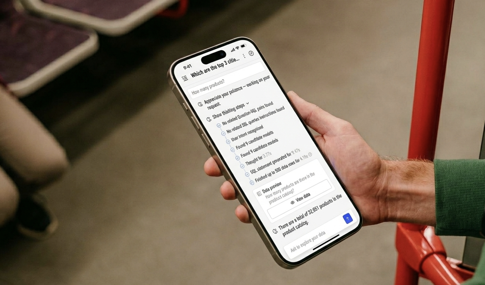
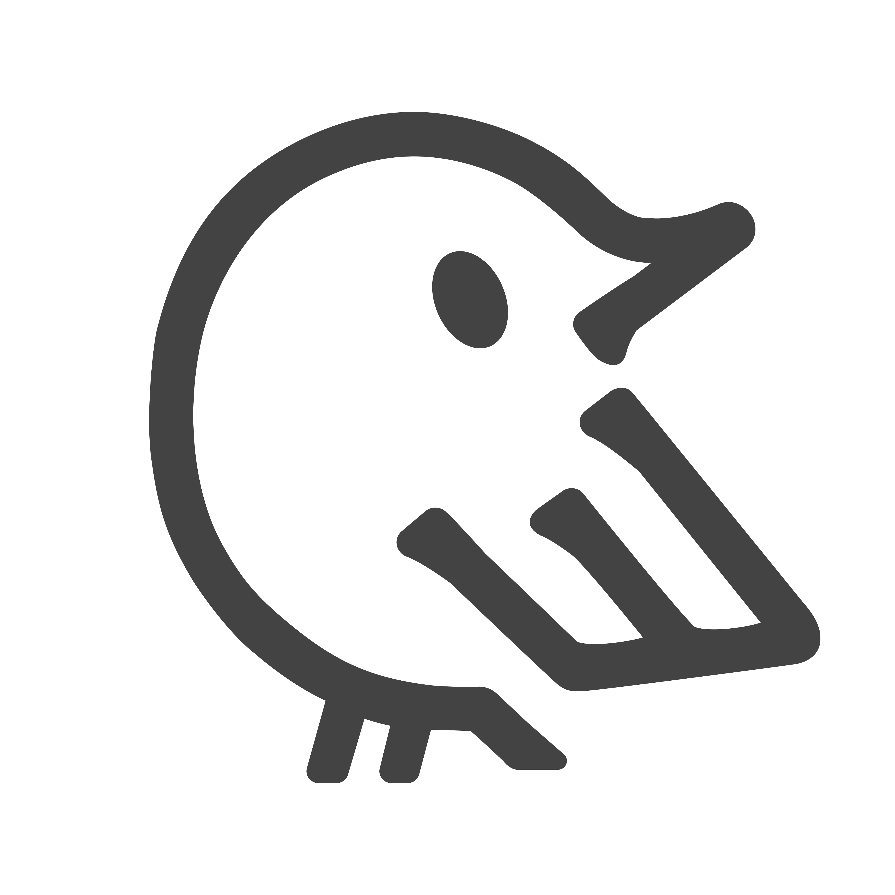

Project Overview
Wren AI is an open-source, conversational BI product that lets business users ask questions of their data in natural language. Customers increasingly wanted Wren AI to live inside their own surfaces, a Notion sidebar, an internal SaaS dashboard, a Tableau panel, not in a separate tab. Embedded Threads is the feature I designed to make that possible: two integration modes, credit-based quota, audited activity, UI customization, and a thirteen-code error system that keeps the embedded surface graceful when things go wrong.
My Role
Sole designer on a three-person delivery team, PM Freda, engineering lead Andy Yen, and me. I owned the end-to-end spec: mode architecture, authentication UX, customization surface, activity log schema, error-code taxonomy, and parity between SaaS and Self-hosted.
Company & Timeframe
Wren AI · Feb – March 2026 · Shipped in SaaS 0.53.0 (Wren 2.0) and Self-hosted 1.9.0
A conversational BI tool that only lives on its own domain is a tool people have to visit. The customers who stick are the ones who can bring data Q&A to the place where decisions actually happen, a Notion doc, a Tableau dashboard, an internal operations SaaS. Embedding was not a nice-to-have; it was where the product was being pulled.
Why embedding was blocking adoption
Enterprise buyers kept asking the same three questions in trials: can my end-users see each other's data?, how do I cap spend per project?, and what happens when the embed breaks in front of my customers?. Those are not "demo" questions, they are gating questions. A product that can't answer them cleanly doesn't make it into a procurement review.
The design bet
Treat Embedded Threads as its own product surface, not a stripped-down version of the main app. That meant a distinct setup flow, a different UI-filtering policy, its own audit schema, and its own error vocabulary. The goal: a host product could adopt Wren AI in an afternoon, and a procurement team could accept it in a meeting.
The temptation was to build one "smart" embed mode that figured out tenancy on its own. The discipline was to refuse. Customers needed to see, in one screen, the trade-off between deploy speed and data isolation, and pick with eyes open.
Embedded analytics is a mature space. Before opening Figma I spent a week reading how Metabase, Tableau, and Power BI solved the same problems, not to copy them, but to know where the accepted patterns ended and where we could still simplify.
Picking the mode is step one. Four parallel systems had to work beneath it: credit-based usage limits, a full audit trail, host-side brand customization, and a thirteen-code error vocabulary. Each one had its own set of edge cases, and each one had to feel native when rendered inside someone else's product.
Every embedded interaction burns Web Credits. Without a cap, a buggy client embed could drain a customer's budget in an afternoon. The default cap is 20 credits per project per month, configurable per-project, and the meter auto-resets on the first of each month. Hitting the cap flips the embed into read-only, the thread is still visible but asking is disabled, so a customer-facing surface never suddenly turns into a blank error page.
The embedded surface runs outside the host app, but the Project Owner still needs to answer "who asked what, when, costing how much?", for compliance, for debugging, for usage-based billing. I designed an activity schema with seven actions and tenant-aware metadata so the log is legible without opening a query console.
| Action | Message | Key metadata |
|---|---|---|
| Create Thread | ${user} created "${thread}" by asking "${question}" | question · sql · answer · credit_used · duration_ms |
| Follow-up | ${user} asked a follow-up in "${thread}" | question · sql · answer · credit_used · duration_ms |
| Delete Thread | ${user} deleted "${thread}" | thread.id · thread.name · timestamp |
| Generate secret key | Owner generated shared secret key | (host-level action) |
| Regenerate key | Owner rotated shared secret key | (invalidates new iframe loads; live sessions survive TTL) |
| Embed settings | ${user} saved embedded threads setting | identity_verification · public_embed · chat_icon · logo · credit_limit · display_name |
| Recommended Qs | ${user} generated home recommended questions | recommended_questions · model_used · tokens · duration_ms |
The embed has to feel like it belongs in the host product, but Wren AI still needs to be legible as the BI engine when something goes wrong. I scoped customization to the four surfaces that shift perceived ownership without hiding the underlying product: company logo, chat icon, theme color, display name. Everything else inherits Wren AI's defaults.
RWD Playground, drag the corner
The embed has to behave the same across Notion sidebars (~393px), web bottom-sheet modals (~768px), and full-page iframes (~1024px+). Drag the bottom-right corner, or snap to a preset, to see how the layout collapses, the thread list disappears first, then the follow-up chips, then the chart shrinks.
What is the cost per unit of production volumes for each supplier?
How does the average Defect rates of products that passed their Inspection result…
Which Transportation modes have a lower average Shipping costs on Route A compared …
How many products?

Appreciate your patience, working on your request!
There are a total of 32,951 products in the product catalog.
The main Wren AI app exposes a lot of surface, suggestion chips, thinking steps, Question-SQL pairs, chart instructions, candidate models. All useful to power users, all noise when the embed is sitting in someone's Notion doc. In the embed I hid:
The embed will fail, tokens will expire, data models will break, credits will run out, users will not be logged in. The rule I held to: the embedded surface never goes blank, and the user always knows whose fault it is. I grouped failures into three severities, each with a distinct UI treatment.
Wren AI ships as both a managed SaaS and a customer-hosted deployment. Embedded Threads had to behave identically on both, but the plumbing underneath had to quietly diverge. Most of the design work was making those divergences invisible to the end user.
An iframe can't call functions across origins. Everything that flows between host and embed, config, resize hints, callbacks, runs over postMessage. I documented a single, minimal contract so customers don't have to reverse-engineer the protocol:
The most valuable hour of the whole project was the one where we decided not to build a single "smart" mode. A clean binary, Public vs Identity, let the rest of the spec fall into place: one has threads shared by URL, the other scopes everything to a signed identity. Every edge case downstream (quota, activity, error codes) inherited that clarity.
I spent almost as long on the thirteen-code error taxonomy as on the happy path. Embeds fail in public, in someone else's product, in front of someone else's users. "Something went wrong" is not an acceptable message there. Naming the severity up front (blocking / read-only / in-thread) meant engineering and support were speaking the same language by the time we shipped.
Making SaaS and Self-hosted feel identical, while routing assets through Minio vs GCS, gating behind a license, and reconciling api_history with org_audit_log, took almost a third of the design-engineering time. Next time I'd draft the parity spec as its own artifact in week one, not in the margins of the main spec.
v1 is out; v1.1 is about listening. I'm instrumenting mode-selection (Public vs Identity %), first-ask time for embedded users, error-code frequency, and quota-exhaustion rate. Those four signals will tell us whether the trade-off we surfaced is the one customers actually make, or whether we should collapse or split it again.